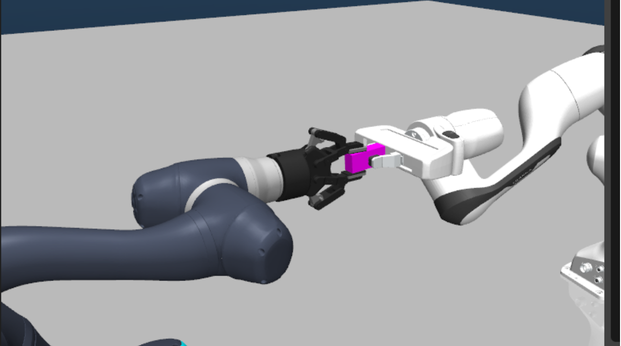
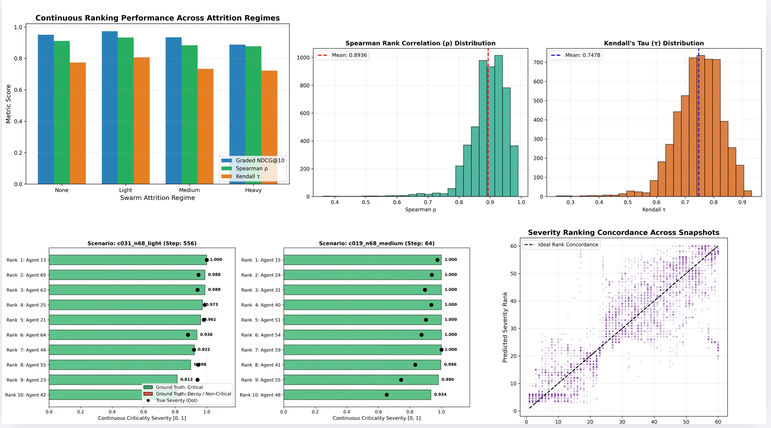

UNDERWATER
IMAGE ENHANCEMENT
IMAGE ENHANCEMENT
FUSEDnet: Fast Underwater Super-resolution and Enhancement Distillation Network
IEEE OCEANS 2026, Sanya, China · Published
Indian Institute of Technology Madras · Aerospace Engineering and Robotics
Distributed Intelligence and Robotics (DIRo) Lab · Reliable and Secure Autonomous Systems (RASAS) Lab
I am an undergraduate dual-degree student at IIT Madras, working on robotics, robot learning, and embodied AI. I work in the Distributed Intelligence and Robotics (DIRo) Lab under Prof. Anuj Kumar Tiwari, and the Reliable and Secure Autonomous Systems (RASAS) Lab under Prof. Devaprakash Muniraj. My research interests include learning-based manipulation, vision-language-action models, multi-robot coordination, and reliable autonomy.
I am interested in how robots can acquire useful skills from data, reason about tasks and environments, and coordinate safely with people and other robots. My work spans robot learning and manipulation, perception and state estimation, motion planning, and autonomous aerial and mobile systems.

Robot learning and embodied AI · Vision-language-action models · Dexterous and bimanual manipulation · Robot foundation models and world models · Multi-robot coordination · Autonomous systems.
Research projects across robot learning, manipulation, perception, planning, and multi-agent autonomy.

My M.Tech thesis focuses on the coordination problem in bimanual manipulation: how two robot arms can coordinate their actions while keeping individual arm-level dexterity modular. I am developing a hierarchical architecture that combines semantic task allocation with collision-aware synchronization, handover decisions, and coordination transfer across arm configurations.
Built a simulated Doosan A0509 pickup-learning pipeline with scripted-oracle data generation, object-state tracking, and wrist-camera observations. Curated 150 episodes (52.7K frames at 20 FPS) and trained and evaluated SmolVLA checkpoints at 20K and 40K steps.
Worked on camera relocalization using PoseNet and D2S, LiDAR–camera calibration for VLP32 and FLIR sensors, point-cloud processing and ICP registration, and 3D reconstruction using Gaussian Splatting and Instant-NeRF. The CV reports approximately 1.3% camera relocalization error.

Designed a graph-learning pipeline for identifying agents critical to swarm resilience under changing swarm sizes, obstacles, and attrition. The model combines GraphSAGE, edge-aware attention, global context fusion, and a per-agent GRU. Reported results include 97.54% F1, 99.50% PR-AUC, 99.66% ROC-AUC, and approximately 0.82 R² for score and future-score regression.
Architected a conditional 1D U-Net diffusion model with scene encoders and reverse-diffusion error correction for obstacle-aware trajectory generation. Generated more than 3,000 cuMotion trajectories across randomized obstacle placements and evaluated against Transformer and MLP baselines.
Developed ship-relative odometry using ICP/FPFH registration and adaptive pose covariance for EKF sensor fusion, enabling GPS- and fiducial-independent landing on a dynamic vessel. Achieved approximately 0.7 m average landing accuracy over 200+ trials, with less than 1.3 m error above 4 m altitude.
Applied TD3 for dynamic task allocation and multi-robot execution, achieving approximately 84% task success over 100 runs in Gazebo simulations scaling to 50 TurtleBots with multi-robot SLAM.
Fine-tuned Llama 3.1 8B using a three-stage learning scheme for sarcasm detection and sentiment reasoning, obtaining 88% accuracy, and compared against single-stage fine-tuning and a DistilRoBERTa baseline.
Built a 3-DOF / 7-state reusable launch vehicle re-entry environment; benchmarked PPO, TD3, DDPG, and DDPG-LSTM under heat-rate, dynamic-pressure, and g-load constraints. Achieved controlled descent from 15 km to approximately 1.78 m.
Deployed NVIDIA Isaac ROS cuMotion on a UR5 and measured approximately 10× faster planning than MoveIt2 RRTConnect on real hardware. Implemented resolved-rate, manipulability-maximizing, and Cartesian controllers with MoveIt2 Servo, Hybrid Planning for dynamic obstacle avoidance, and a Podman-containerized multi-pipeline framework.
Worked on PoseNet/D2S camera relocalization, VLP32–FLIR LiDAR-camera calibration, point-cloud processing, ICP registration, and 3D scene reconstruction using Gaussian Splatting and Instant-NeRF.
Progressed from Software Engineer to Head of Operations and Team Lead, leading a 63-member multidisciplinary team. Competition results included first place at Caterpillar Autonomy Challenge 2025, sixth worldwide at Anatolian Rover Challenge, qualification for NASA Lunabotics 2026, third at IRC, fourth at ISDC, and second at Caterpillar Autonomy Challenge 2026. Also served as Teaching Assistant for Introduction to Robotics (ID6040), conducting CoppeliaSim practical sessions on arm kinematics and sim-to-real transfer.